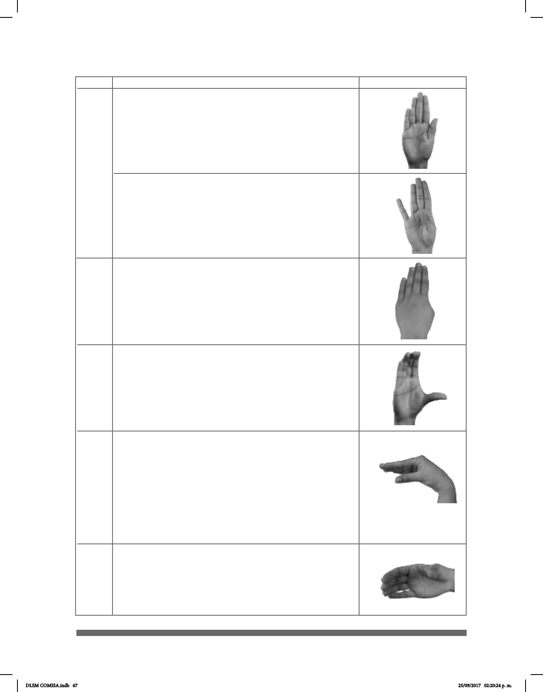

67
CL USO Y SIGNIFICADO IMAGEN
• Supercie plana parecida a una pared; calle,
cama, techo.
• Brocha.
• Altura, extensión de supercies plantas.
B
C
• Ancho de tablas. Marca límites de líquidos en
contenedores.
• Objetos rectangulares, como un libro o un
sándwich (seña monomanual o bimanual).
• Cualquier objeto de forma circular o cilíndrica.
%
• Supercies horizontales o verticales.
B’
• Altura.
• Entidad manipulable que se reere a libros,
revistas u objetos encuadernados.
^
B
DLSM COMISA.indb 67 25/09/2017 02:20:24 p. m.